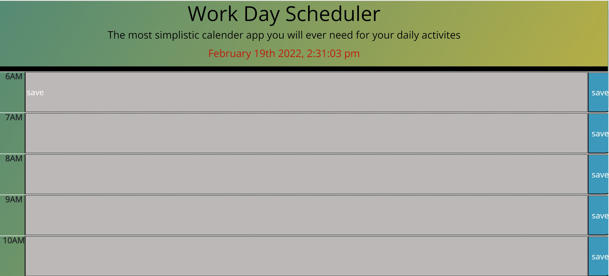

About Me
Hello, I like to start off by saying thank you for taking the time to checkout my work. My name is Gerald Pegg III and I was orginally born and rasied in Columbia, Missouri but right now I'm currently based in the Kansas City Area. I was previously working at a Title Agency but decided to switch my career trajectory and pursure a career as a Full Stack Web Developer. I am currently in school through the University of Kansas: Coding Bootcamp program where upon graduation (June 2022) I will be certified as a Full Stack Web Developer. Since the beginning of my journey I have learned a new set of skills that are more closley aligned with my goals of working in a more fufilling and rewarding career. My ultimate ambition is to be able to assit on the development on various web applications; aiding in it's functionality with both dynamically generated and engaging style that is also user firendly. If you like to inquire more information about my services please use the liks below and I will be more then happy to discuss potential employment oppurtunities. Thank You.
Work
RUN BUDDY DEMO SITE
Built With: JavaScript, HTML, CSS
This project is a DEMO health application site built to showcase my skills in creating dynamic html web pages. With this site you'll be able to see a dynamically generate layout where the user will be to submit information through the sign up forms, learn information about the "trainers" and use the generated google maps display to find thier location.
View Project on GitHubGP360 README Generator
Built With: JavaScript, HTML, CSS, Node
Professional Read Me Generator Using Node.js to input necessary information pertaining to your application. This app with help save time during the initial development process and can be adjusted to add aditional content such as images and badges on top of the app desciption.
 View Project on GitHub
View Project on GitHub
Janet Jackson Fan Quiz DEMO
Built With: JavaScript, HTML, CSS, jQuery
Take this quiz to test your immense knowledge of one of the greatest popstars in history and prove that you really are the Ultimate Janet Fan. This app uses a number of HTML and Javascript functions to keep track and save your score through local storage to compare to other users.
 View Project on GitHub
View Project on GitHub
GP360 Ultimate Work Day Scheduler
Built With: JavaScript, HTML, CSS, jQuery, Bootstrap
This app will be the only one needed for your daily activities. The simplistic functionality will help to keep track with percision so that proscrastination becomes a thing of the past. You will be able to save each task to a specific time and the color coding of prior and future daily activites saved to the app will ensure accuracy in having your daily needs met with easy readability.
 View Project on GitHubGP360 Taskmaster PRO DEMO
Built With: JavaScript, HTML, CSS, jQuery
This app will enable to user to be able to create and remove various task and sort them out based on importance and date for which it was created. Procrastination will be a thing of the past when utilizing this app. You will be able to organize your task with the simplistic prompts making it scalable for all ages.
 View Project on GitHub
View Project on GitHub
Contact info and Links
Please use the following information below to inquire more about me and my services. Please click on the links provided to view my full linkedin page and resume.